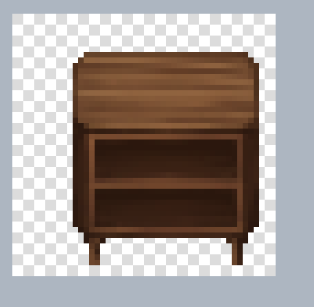
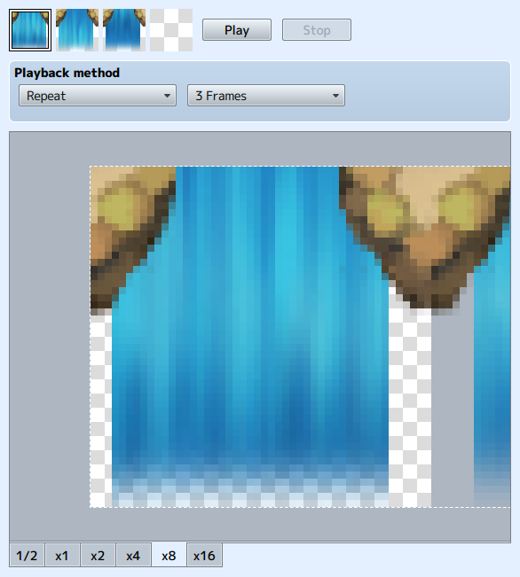

About Stamp Tools
Select/Place Stamps
Select a stamp from the palette and an image with a dotted line frame will be displayed on the canvas. Then drag the stamp to move it.
Click or press the enter key to place a stamp on the canvas.
*Once placed, the stamp cannot be moved.

If the stamp has an animation frame, then all frames are stamped.
